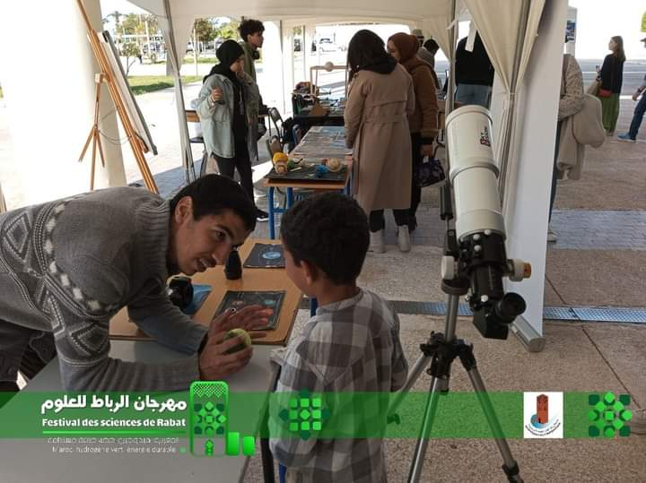

L'astronomie est une science qui s'intéresse à l'étude des corps célestes tels que les étoiles, les planètes et les galaxies, visant à comprendre leur origine, leur évolution, leur composition et leurs mouvements. Ce domaine a débuté depuis l'Antiquité, lorsque l'homme observait le ciel et suivait les mouvements des astres dans le but de prévoir certains événements, comme les saisons agricoles. Avec l'évolution des outils et des technologies au fil des siècles, l'étude de l'espace est devenue plus précise et plus globale, permettant à l'humanité une compréhension plus profonde de l'univers. Aujourd'hui, l'astronomie est considérée comme une science fondamentale qui nous aide à explorer l'espace et à comprendre notre place dans l'univers. Elle contribue au développement de nombreuses technologies, comme les satellites, et améliore nos capacités à communiquer et à rechercher la vie au-delà de la Terre. Étudier l'astronomie ouvre de larges perspectives, en permettant aux étudiants d'acquérir des compétences analytiques et une compréhension approfondie des phénomènes naturels, ce qui peut être d'un grand bénéfice pour l'humanité et aider à trouver des solutions scientifiques et techniques à de nombreux défis.
Le club d'astronomie a pour mission de promouvoir la culture scientifique en matière d'astronomie auprès des étudiants, de favoriser leur ouverture sur l'univers et de les sensibiliser à l'importance de la recherche scientifique. En utilisant les outils numériques, nous souhaitons rendre l'astronomie accessible à tous et encourager les étudiants à développer leurs compétences en matière d'observation, d'analyse de données et de communication scientifique.
